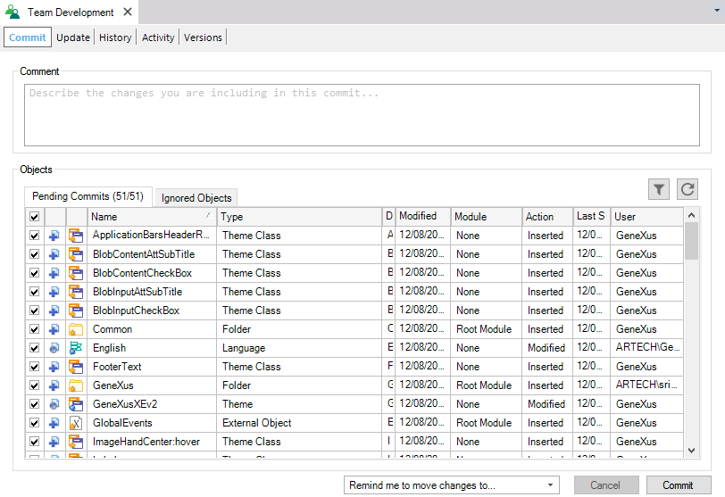

Knowledge Manager Team Development provides the mechanism for interacting with a GeneXus Server instance. It is accessed through the Knowledge Manager Menu by selecting the Team Development option.  See alsoCommit to GeneXus Server
|
| Backlinks | ||
| Activity Tab | CI integrated to GeneXus and GXserver | Commit to GeneXus Server |
| Toc:GeneXus - Table of contents | ||
| Update From GeneXus Server |